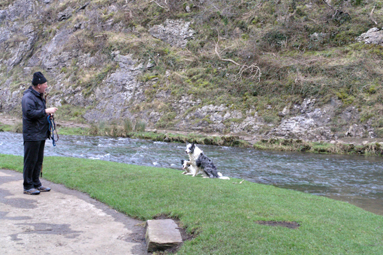

Hunde – was du wirklich wissen musst
Hunde sind Rudeltiere. Sie leben von Nähe, Routine und der Beziehung zu ihren Menschen. Ein Hund, der „nur" Futter und Auslauf bekommt, hat nicht genug.

Auf einen Blick
- Erwachsene Hunde sollten nicht länger als 4–5 Stunden am Stück allein sein.
- Ein Hund kostet im Laufe seines Lebens zwischen 12.000 und 20.000 Euro.
- Kastration beim Rüden: ca. 200–400 Euro, bei der Hündin: ca. 400–800 Euro (GOT 2022).
- Etwa 80 % der unkastrierten Rüden über 6 Jahre entwickeln Prostataprobleme.
- Ein Garten ersetzt keine Spaziergänge – Hunde brauchen neue Reize, Gerüche und Erkundung.
Soziale Bedürfnisse: Mehr als Futter und Gassi
Hunde sind hochsoziale Tiere. In der Natur leben sie in Familienverbänden, schlafen zusammen, jagen zusammen, kommunizieren ständig. Ein Hund, der den Großteil des Tages allein verbringt, lebt gegen seine Natur.
Was Hunde brauchen – jeden Tag:
- Körperkontakt und Nähe zu ihren Bezugspersonen
- Geistige Auslastung (Training, Suchspiele, neue Herausforderungen)
- Ausreichend Bewegung – je nach Rasse und Alter 1–3 Stunden täglich
- Einen festen Tagesrhythmus mit verlässlichen Strukturen
- Kontakt zu anderen Hunden (Sozialverhalten muss gelernt und gepflegt werden)
Allein zu Hause: Die ehrliche Rechnung
„Ein Garten reicht."
Ein Garten ist nach kurzer Zeit bekanntes Gelände. Er ersetzt keine Beziehung, keine neuen Gerüche und keine gemeinsame Erkundung.
Ein Hund wartet auf dich.
Wenn dein Alltag keine verlässliche Betreuung erlaubt, ist Warten die bessere Entscheidung als ein Hund, der acht Stunden still leidet.
Die Empfehlung von TASSO, dem Deutschen Tierschutzbund und nahezu allen Fachleuten ist eindeutig: Erwachsene Hunde sollten nicht länger als 4–5 Stunden am Stück allein bleiben. In Ausnahmen – nicht als Regel – bis zu 6 Stunden.
8 Stunden oder mehr, wie ein normaler Arbeitstag? Nicht vertretbar. Auch nicht mit einem zweiten Hund, auch nicht mit einem großen Garten. Ein Hund, der den ganzen Tag wartet, ist kein zufriedener Hund – auch wenn er nichts zerstört und nicht in die Wohnung macht.
Wer an den meisten Tagen 8 Stunden oder länger außer Haus ist und niemand sich um den Hund kümmert, für den passt ein Hund in dieser Lebensphase nicht. Das ist keine Moralkeule – das ist Tierschutzrealität.
Was ein Hund kostet – die ehrliche Rechnung
| Posten | Einmalig | Jährlich |
|---|---|---|
| Anschaffung (Tierheim / Züchter) | 200–2.000 € | – |
| Erstausstattung (Leine, Napf, Körbchen, Box) | 200–500 € | – |
| Futter (hochwertiges Nassfutter / Trockenfutter) | – | 600–1.500 € |
| Tierarzt (Impfungen, Entwurmung, Vorsorge) | – | 200–500 € |
| Hundesteuer (je nach Gemeinde) | – | 50–200 € |
| Haftpflichtversicherung | – | 50–100 € |
| Krankenversicherung (optional, empfohlen) | – | 250–600 € |
| Unvorhergesehenes (Notfall-OP, Medikamente) | – | 0–3.000 € |
| Gesamt über 12 Jahre | ca. 12.000–20.000 € | |
Angaben: Durchschnittswerte für mittelgroße Hunde. Große Rassen, chronische Erkrankungen oder Spezialfutter können deutlich teurer werden. Quelle: Zusammenstellung aus Angaben des Deutschen Tierschutzbundes, TASSO e. V. und der Bundestierärztekammer.
Kastration
Kastration ist beim Hund keine Routine, sondern eine Einzelfallentscheidung – anders als bei Katzen. Bei Rüden kann sie sinnvoll sein, wenn hormonbedingtes Problemverhalten vorliegt (Aggression, exzessives Markieren, Streunen). Bei Hündinnen schützt sie vor Gebärmutterentzündung (Pyometra) und senkt das Risiko für Mammatumoren, wenn sie vor der zweiten Läufigkeit erfolgt. Ausführliche Infos zu Eingriffsarten, Kosten und Mythen findest du auf der Seite Kastration.
Die Kosten nach der aktuellen Gebührenordnung für Tierärzte (GOT 2022): Rüde ca. 200–400 Euro, Hündin ca. 400–800 Euro – abhängig von Größe, Gewicht und Praxis.
Hofhaltung und Zwinger
Auf dem Land weit verbreitet: der Hund lebt draußen, auf dem Hof, vielleicht im Zwinger. Das kann funktionieren – unter strengen Bedingungen. Die Tierschutz-Hundeverordnung regelt Mindestanforderungen: Zwingergröße abhängig von der Schulterhöhe, täglich mehrstündiger Auslauf außerhalb des Zwingers, Witterungsschutz und Sozialkontakt.
Problematisch wird es, wenn der Hund als Alarmanlage gehalten wird. Den ganzen Tag allein auf dem Hof, ohne Beschäftigung, ohne echte Beziehung zu Menschen. Ein Hund, der nur bellt, wenn jemand kommt, und ansonsten allein existiert, ist kein glücklicher Hund – egal wie groß der Garten ist. Mehr über die Psychologie hinter solcher Tierhaltung.
Häufige Gesundheitsprobleme
Etwa 40 % der Hunde in Deutschland sind übergewichtig. Die Ursache ist fast immer menschengemacht: zu viel Futter, zu viele Leckerlis, zu wenig Bewegung. Übergewicht belastet Gelenke, Herz und Stoffwechsel und verkürzt die Lebenserwartung messbar.
Viele Hunde haben ab dem dritten Lebensjahr Zahnstein, Zahnfleischentzündungen oder lockere Zähne. Unbehandelt führt das zu Schmerzen, Futterverweigerung und Infektionen. Regelmäßige Zahnkontrolle beim Tierarzt ist Pflicht – auch wenn der Hund sich nichts anmerken lässt.
Hüftdysplasie (HD) und Ellbogendysplasie (ED) sind bei vielen großen Rassen verbreitet und teilweise erblich bedingt. Symptome: Lahmheit, steifer Gang, Bewegungsunlust. Je früher erkannt, desto besser behandelbar. Beim Kauf eines Rassehundes: unbedingt auf HD/ED-Befunde der Elterntiere achten.
Futtermittelunverträglichkeiten, Umweltallergien, Flohspeichelallergie – Hunde reagieren häufig mit Juckreiz, Ohrenentzündungen, Pfotenlecken oder Fellverlust. Die Diagnostik ist oft langwierig und die Behandlung teuer.
Bevor du dich entscheidest
- Ich bin mindestens 10–15 Jahre bereit, Verantwortung für diesen Hund zu tragen.
- Ich bin an den meisten Tagen nicht länger als 4–5 Stunden von zu Hause weg – oder habe eine zuverlässige Betreuung.
- Ich kann mindestens 150 Euro pro Monat für laufende Kosten aufbringen.
- Ich habe Rücklagen für tierärztliche Notfälle (mindestens 1.000–2.000 Euro).
- Alle Personen im Haushalt sind einverstanden.
- Ich habe einen Plan für Urlaub, Krankheit und Notfälle.
- Ich bin bereit, mein Sozialleben und meinen Tagesablauf um den Hund herum zu planen.
- Ich weiß, welche Rasse und welches Energielevel zu meinem Alltag passen.
Manche Hunderassen – Möpse, Französische Bulldoggen, Teacup-Hunde – haben zusätzlich angezüchtete Gesundheitsprobleme. Wenn du Symptome beobachtest, die dich beunruhigen, schau auf die Notfall-Seite.